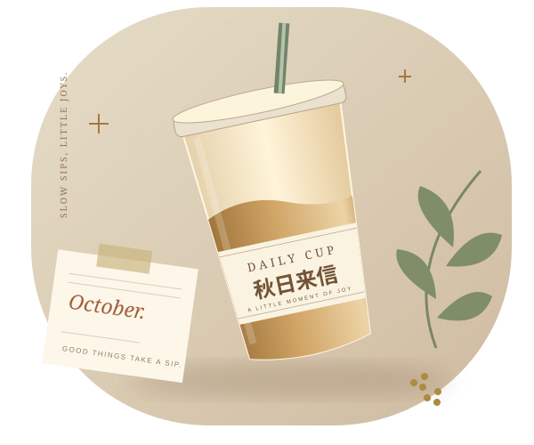
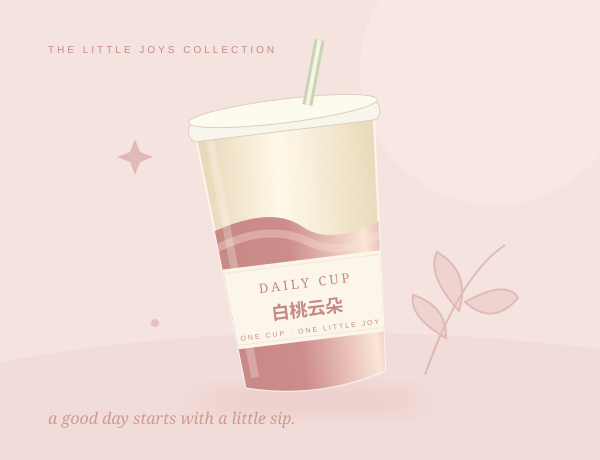

NEW CUP, NEW LITTLE JOY
把期待，
装进下一杯。
发现喜欢的上新，收集喝过的心情。
给平凡日常，留一点甜甜的期待。
十月灵感特辑 ／ 教学示例

好好喝茶
慢慢记录 DAILY CUP CLUB
慢慢记录 DAILY CUP CLUB
不错过喜欢的那一杯
把小确幸收进手账
一杯一页，慢慢积累
THE NEXT GOOD SIP
下一杯，值得期待
上新日期、品牌与产品为课堂演示数据，不作为实际购买信息。

a little sip of happiness.